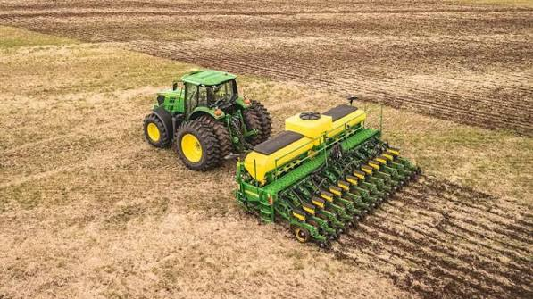

O que é agricultura?

A agricultura é uma das atividades mais importantes para a sociedade. Ela envolve o cultivo da terra para produzir alimentos, fibras, matérias-primas e outros produtos utilizados diariamente pela população.
Ao longo dos anos, novas técnicas e tecnologias foram incorporadas ao trabalho no campo. Entre essas tecnologias estão as máquinas agrícolas, que ajudam a aumentar a produtividade e diminuir o esforço físico dos trabalhadores.
Principais máquinas agrícolas
As máquinas agrícolas desempenham diferentes funções durante as etapas de produção. Cada equipamento possui características específicas para determinada atividade.
- Tratores: utilizados para preparar o solo, transportar equipamentos e realizar diversas atividades.
- Colheitadeiras: utilizadas para realizar a colheita de culturas como soja, milho e trigo.
- Plantadeiras: responsáveis pela distribuição das sementes no solo.
- Pulverizadores: utilizados para aplicar produtos agrícolas de maneira mais uniforme.
- Arados: utilizados no preparo e revolvimento do solo.

Tecnologia no campo
A agricultura moderna está cada vez mais conectada à tecnologia. Sistemas de GPS, sensores, computadores de bordo e softwares de gerenciamento permitem que o produtor acompanhe diversas informações sobre sua propriedade.
A chamada agricultura de precisão permite utilizar recursos de forma mais eficiente, buscando melhorar a produtividade e reduzir desperdícios.
"A tecnologia aplicada ao campo ajuda o produtor a tomar decisões melhores e a utilizar os recursos disponíveis de maneira mais eficiente."

Importância das máquinas agrícolas
A mecanização agrícola trouxe grandes mudanças para o setor rural. Com máquinas modernas, muitas atividades podem ser realizadas em menos tempo e com maior precisão.
- Aumentam a produtividade das propriedades.
- Reduzem o esforço físico dos trabalhadores.
- Agilizam o plantio e a colheita.
- Contribuem para um trabalho mais preciso.
- Podem ajudar na redução de desperdícios.
Apesar dos benefícios, é importante que as máquinas sejam utilizadas corretamente. A manutenção preventiva, o treinamento dos operadores e o uso adequado dos equipamentos são fundamentais para garantir segurança e eficiência.